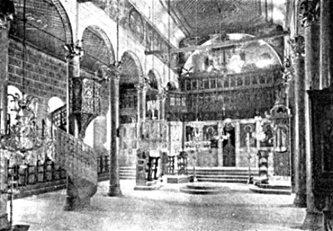
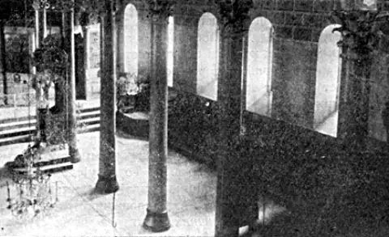
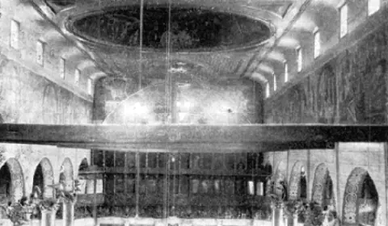

Histoire · 1944
Détails de l'église de la Sainte-Vierge
13 photos de l'intérieur de la cathédrale de la Sainte-Vierge. Plus dans Églises chrétiennes.


L'intérieur de la Sainte-Vierge - l'église cathédrale. À gauche, la chaire en sculpture profonde ; à droite, contre la colonne plus proche de l'autel, le trône épiscopal.

Le collatéral nord de l'église avec la chaire et
le trône royal.


Le collatéral sud avec le trône épiscopal.

La chaire, sculptée en 1838 dans un travail d'art sur bois, et l'escalier à côté.

Le trône épiscopal dans l'église de la Sainte-Vierge,
réalisé en 1838.

Le trône royal dans l'église.

La nef centrale de l'église de la Sainte-Vierge avec l'iconostase et le trône épiscopal.


La partie haute de la nef centrale avec une coupole aveugle au plafond.

La partie haute de l'iconostase (en sculpture profonde) a été réalisée en 1838 en bois de noyer, la partie basse en marbre blanc.

Le côté ouest avec la tribune des femmes (sur la galerie).

Vue des colonnes et du mur de la nef centrale (côté nord).

Le côté droit de l'iconostase en marbre avec les icônes du Christ Sauveur et de saint Jean-Baptiste.

Le côté gauche de l'iconostase en marbre avec les icônes de la Très Sainte Mère de Dieu et de sa Nativité.